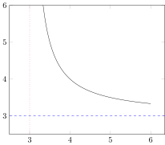

Convenience constructs
Horizontal and vertical lines
x = range(3.01; stop = 6, length = 100)
y = @. 1/(x-3) + 3
@pgf Axis(
{
ymin = 2.5,
ymax = 6,
xmin = 2.5
},
Plot(
{
no_marks
},
Table(x, y)
),
HLine({ dashed, blue }, 3),
VLine({ dotted, red }, 3)
)